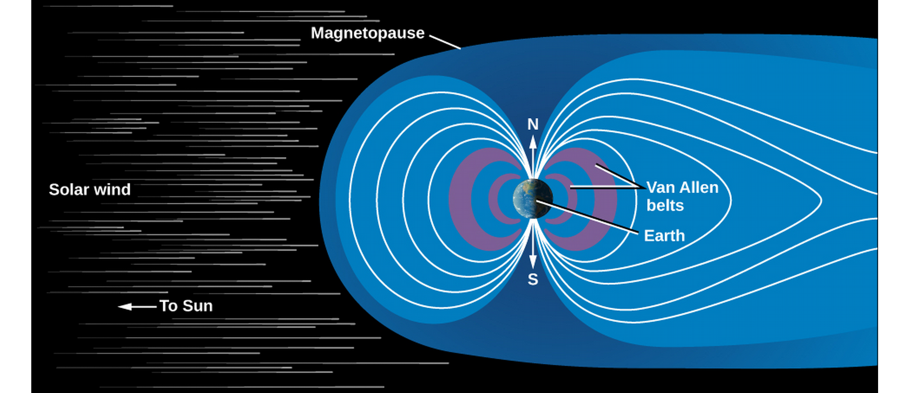
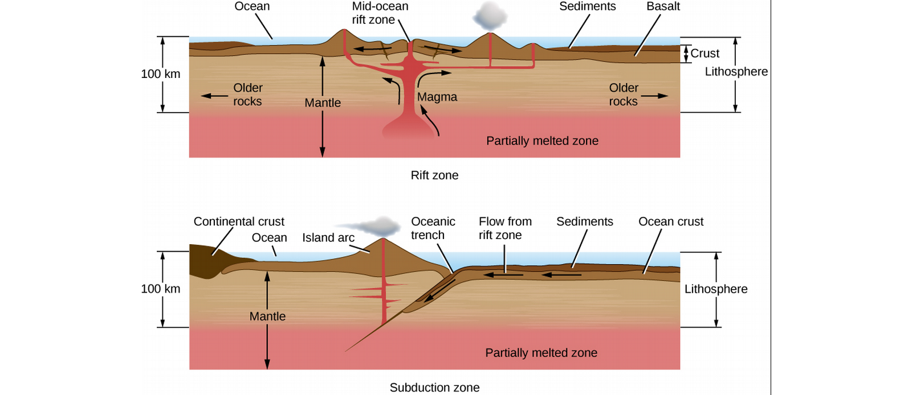
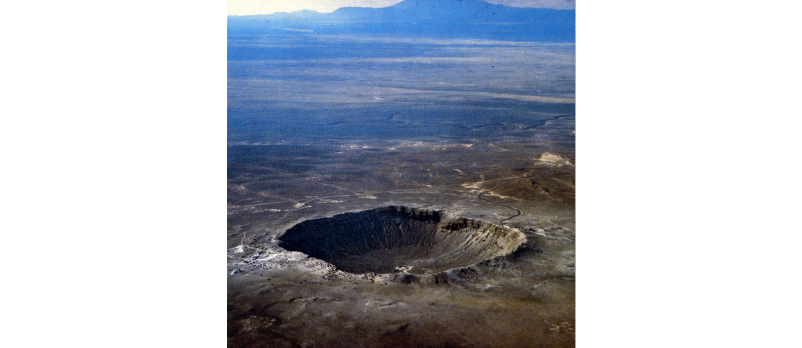
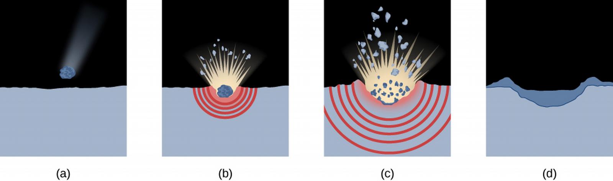

ASTR101 Ch 8-9
Table of Contents
Ch 8 - Earth as a Planet
The Global Perspective
Earth's Interior
- With a diameter of 12,756, how can we study Earth's innards?
- One way is to by measuring the transmission of seismic waves, sound waves that travel inside the Earth due to, eg, earthquakes or explosions. Just like a bell rings differently based on its shape and material distribution, the seismic waves change as they go through Earth.
- Seismic waves are measured at various locations, which has determined an inner composition for the Earth.

- The crust is the outermost layer, covered 55% by water by 6 km thick oceanic crust, made typically of basalt, volcanic rock produced from cooled lava, while 45% is 20-70 km-deep continental crust, made typically of granites, a class of silicates made from silicon and oxygen. .3% of Earth's mass.
- The mantle is the largest layer, going down to about 2900 km. It's pretty solid, though at these pressures/temperatures rocks can slowly move and deform. Density of 2.5-5 g/cm3.
- The core is dense and metallic with a diameter of 7000 km, larger than Mercury. The outer core is liquid, and the inner core (2400 km in diameter) may be solid.
- Evidence for differentiation is that the Earth's bulk density is 5.5 g/cm3 while its surface density is only 3 g/cm3.
Magnetic Field and Magnetosphere
- Moving ions in Earth's core create a giant magnetic field so that the Earth acts like a bar magnet; the region where this field dominates the Sun's magnetic field is called the magnetosphere, whose outer limit is the magnetopause.

- Charged particles moving in space become trapped in this magnetic field; namely, the solar wind, a collection of charged particles spreading outwards from the Sun's activities. This shapes the magnetic field of the Earth away from the Sun.
- High-energy ions are trapped in regions of the magnetosphere called the Van Allen Belt.
Earth's Crust
Composition of the Crust
- Largely oceanic basalt and continental granite (as discussed), both igneous rock (cooled lava, or molten rock).
- Sedimentary rocks are wind or water-deposited rock fragments that bind together without melting, such as sandstone, shales, and limestone.
- Metamorphic rocks are igneous rocks changed by high temperature and pressure.
- Neither sedimentary nor metamorphic rocks are common on other planets!
- Primitive rock is the material of the planetary system that hasn't undergone heating—there's none from Earth itself, since Earth was in a molten state.
Plate Tectonics
- Geology is the study of the Earth's crust and the causes of its shape.
- Plate tectonics explains the slow drift of continents and large geological features; it's a fundamental theory describing the heat transport of the Earth. A heat transport mechanism is created in the evolution of all planets, based in part on the planet's composition.
- From the crust outwards, Earth is divided into about a dozen tectonic plates which are moving, slowly.
- The plate movement is powered by convection, or heat transfer by the movement of cold and hot material, of the mantle. Convection mixes the milk in your coffee! https://www.instagram.com/p/BmQ57IQFLCl/?utm_source=ig_web_button_share_sheet

Rift and Subduction Zones
- Tectonic activity manifests in the crust as rift zones where tectonic plates pull apart from each other, with molten rock filling the space.
- Most rift zones are now in oceans, the central African rift is an example of a continental rift zone.
- As two plates drift apart, the plates overlap with other plates in subduction zones, most common with thinnner, oceanic plates.
- This is how mountain ranges are formed, while the ragged peak shapes of mountains is from water/ice erosion (unlike on Mercury or the moon, which lack water).
- 60 thousand km of active rifts identified, drifting apart at 4 cm/year.

Fault Zones and Mountain Building
- Plates also slide parallel to each other in faults, also at a rate of centimeters per year.
- Motion is not smooth, but builds up stress in the crust released in sudden slippage (earthquakes).
- The average motion of the tectonic plates is constant, so the longer the time between earthquakes, the more violent the earthquake.
- Eg, Parkfield, CA has slipped 1 m every 25 years or so, but LA has earthquakes for 7 m of slippage every 150 years. The last time LA had an earthquake was 1857.

Figure 5: San Andreas Fault
Volcanoes
- Where lava rises to the surface.
- Mid-ocean ridges are underwater mountain ranges formed by rising lava at plate boundaries.
- Lava flowing from long cracks can form lava plains.
Earth's Atmosphere
- Pressure is force per unit area, and the atmosphere's pressure on us at Earth's surface is 1 bar, or 1.03 kg/cm2. Compare to 300 bars average ocean floor pressure.
- Atmosphere's mass is 5×1018 kg, about a millionth Earth's total mass.
Structure of the Atmosphere
- Most of the atmosphere in troposphere, within 10 km of Earth's surface, containing convection currents.
- Followed by stratosphere, which rises to 50 km, cold and cloudless, with ozone (O3) on top (absorbs UV).
- Thin atmosphere above 100 km, ionosphere is where lighter (often ionized) atoms can leave the Earth!

- Stratosphere has ozone (O3) on top, which absorbs ultraviolet light so we can survive. We were destroying ozone with chlorofluorocarbons (CFCs), causing a hole in the ozone layer over the Antarctic, so an international agreement bans these chemicals.
Atmospheric Composition and Origin
- The air we breathe (at Earth's surface) is 78% N2, 21% O2, 1% Ar, with traces of water vapor, carbon dioxide, water droplets, dust particles, etc. A volatile material evaporates at low temperatures.
- This composition has changed during Earth's history, as studied, e.g., in the chemistry of minerals forming at different times.
- Theories for source of Earth's atmosphere and oceans:
- Formed with the rest of Earth from Sun debris.
- Released from interior through volcanic activity.
- Formed by comet/asteroid impacts
- Evidence favors combination of 2 and 3.
Weather and Climate
- All planets have weather; the circulation of atmosphere.
- Mostly powered by surface heat from sunlight, and convection currents.
- Climate refers to atmospheric effects that last decades and centuries, which accumulate.
- A change in 2° C would cut wheat production in half in North America, or melt enough glaciers to raise sea level by 10 m, flooding many cities and islands!
- Earth has had ice ages, the last of which lasted 20k years, 14k years ago, with ice nearly 2 km thick covering Boston and NYC.
Life, Chemical Evolution, and Climate Change
The Origin of Life
- Astrobiology studies the origins, distribution, and future of life in the universe.
- Chemical evidence suggests life precedes the oldest surviving rocks (3.9 billion years old).
- 3.5×109 years ago, we had stromatolites—blue-green photosynthesizing micro-organisms—which still exist today!
- Fossils only preserved since 600 million years.
- Early Earth atmosphere was CO2 and CH4 (methane) but no oxygen gas, which supports chemical reactions leading to productions of the building blocks of life (amino acids, proteins, etc.)
- Tens of millions of years after Earth's formation, large molecules (like viruses) existed in seas.
- Depleted food in nutrient-rich seas, then began evolutionary process in search for other food sources.
- Can study DNA in genetics or genomics, the study of shared genetics among Earthly beings.
- Most diversity of life in microbial level. There are more microbes in a bucket of soil than stars in the Galaxy!


- Ideas that life may have begun in extremely hot locations on our planet.
- Life may have begun on Mars (which cooled sooner) and transferred somehow to Earth.
The Evolution of the Atmosphere
- Key evolutionary step is blue-green algae which takes in CO2 and releases oxygen; these gave rise to plants! Plants make use of photosynthesis, taking advantage of sunlight energy for their internal growth.
- Still not a lot of oxygen until 2 billion years ago due to Earth's crust's chemical reactions.
- After that, oxygen formed Earth's ozone (O3) layer, which allowed life to leave the ocean (before this, landmass was barren of life).
- Plants create oxygen which allows for animal life. Animals ate plants. Eventually, breathed oxygen directly from atmosphere.
The Greenhouse Effect and Global Warming
- Greenhouse gases reflect infrared but allow sunlight through; water vapor, methane, CO2.
- Currently raises temperature by 23 °C on Earth (necessary!), but increasing (bad).

- Burning fossil fuels uses up oxygen (referred to as oxidizing process) and releases CO2.
- Forests create oxygen from CO2, but we're cutting those down.
- In the past century, atmospheric CO2 increased by 30% (post-industrial revolution);
- Still rising at .5%/year.
- See https://climate.nasa.gov/evidence/
- For common misconceptions, https://www.skepticalscience.com/argument.php?f=taxonomy.


Human Impacts on Our Planet
- We helped some animals go extinct with hunting.
- Relieved a lot of tree from standing up with lumbering.
- Making sure planet doesn't get cold with global warming.
- Anthropocine, a suggested name for the current epoch highlighting humans as the dominant influence on our planet's atmosphere and ecology.
Cosmic Influences on the Evolution of Earth
- Moon has craters from cosmic collisions long ago; where are Earth's craters?
- Earth was affected by about as many craters as the Moon (they are neighbors).
- Earth's active geology smooths out its surface.
- Crater impacts have had an important evolutionary influence.
Recent Impacts
- June 30, 1908, in Siberia, an explosion 8 km above the surface flattens 1000 km2 of forest, killing reindeer and other animals and marking peaks in pressure measuring instruments. Equivalent of 5 megaton nuclear bomb.
- Winter 2013, Chelyabinsk, Russia, .5-megaton explosion at height of 21 km.
- A lump of iron 40 m in diameter created the Meteor Crater in AZ 50,000 years ago with 10-megaton nuclear bomb.

Figure 11: Meteor Crater, AZ

Mass Extinction
- Even larger meteors have a global effect.
- Marking the end of the dinosaur age 65 million years ago at the end of the Cretaceous period in a time of mass extinction when more than half the species on the planet died out ("the great dying"), in Mexico's Yucatan peninsula, with mass greater than a trillion tons measured from layer of deposited sediment, a meteor creates the Chicxulub crater.
- The sediment is rich in iridium (rare on Earth but abundant in comets and asteroids) which demonstrates mineral characteristics of the temperatures and pressures of a gigantic explosion.
- So how did the dinosaurs die, around the planet?
- Lifted 100 trillion tons of dust into atmosphere, blocking sunlight for several months, killing plants and herbivores, creating large-scale fires (burning debris), and making rainwater acidic.
Impacts and the Evolution of Life
- There are a dozen or so mass extinctions on geological record, "fun" fact.
- Following each mass extinction is a sudden evolutionary burst; the latter resulted in mammals to thrive.
- Earth is posited to have been struck by objects 1000 larger than the Chucxulub meteor in its early history, boiling Earth's ocean and stripping its atmosphere, and perhaps wiping life out several times.
- Oldest survivings Earthly microbes are thermophiles (adapted to high temperature).
Impacts in Our Future?
- Not improbable that something should collide with Earth in the future.
- Good news, no Chicxulub-sized asteroids heading our way (thanks for checking, NASA).
- Still probing for asteroids on collision with Earth. So far so good.
Ch 9 - Cratered Worlds
General Properties of the Moon
- The Moon has no atmosphere, so that ancient happenings are preserved, and the Moon is deficient volatiles.
- The Moon and Mercury share many similarities; see Table 9.1.
- Both are geologically dead.
Exploration of the Moon
- Lunar exploration began with telescopic observations.
- Russia took photos of the lunar far side in 1959 with Luna 3 and landed on its surface in 1966, transmitting pictures and data to Earth.
- The US Apollo program sent 12 astronauts to the lunar surface from 1968 to 1972; the first arrived in 1969. The program achieved three major objectives:
- Astronauts collected 400 kg of samples for analysis.
- Each landing after the first left a lunar surface experiment package (ALSEP).
- Orbiting Apollo command modules analyzed lunar surface from above.
- Lunar missions lasted until 1972.
Composition and Structure of the Moon
- Density of only 3.3 g/cm3, the Moon is made entirely of silicate rock. No large metal core (measured with seismometers). Little water on Moon in chemically bound form, in rocks.
- NASA crashed LCROSS (lunar crater observation and sensing satellite) into Moon's South pole at 9000 km/hr, releasing a plume of water vapor and other chemicals visible o other spacecrafts.
- Estimated total water on Moon is hundreds of billions of tons; only enough to fill a lake 100 miles across.
- Estimated to be from asteroids and comets, some small fraction of their water froze in extremely cold regions (cold traps).
The Lunar Surface
General Appearance
- Lots of craters named after scientists, vast splotches of darker lava flows erroneously recognized as seas (sea is mare in Latin) and named, eg., Mare Nubium. Prominent craters named after prominent scientists by Vatican scientists, except Galileo, who they named a small crater after.
- Though the moon appears similar, its geological features are created differently than Earth's.
Lunar History
- Lunar rocks were radioactively dated to be up to 3.3-4.4 billion years old, much older than Earth's. Keep in mind Earth and the Moon were created 4.5-4.6 billion years ago.
- Moon crust is made of 83% silicate rocks called anorthosites, in regions known as the lunar highlands, which are 4.1-4.4 billion years old.
- The maria cover 17% and are much less cratered, consisting mostly of dark-colored basalt from volcanic eruptions billions of years ago which covered impact basins of colliding material.
- Major lunar volcanic activity ceased about 3.3 billion years ago.
On the Lunar Surface
- "The surface is fine and powdery. I can pick it up loosely with my toe. But I can see the footprints of my boots and the treads in the fine sandy particles." - Neil Armstrong
- Boots sank several centimeters into fine dust of upper surface of lunar maria.
- Without atmosphere, Moon experiences greater temperature fluctuations, from -173 °C to above 100 °C.
Impact Craters
Volcanic Versus Impact Origin of Craters
- Astronomers didn't realize lunar craters were result of impacts—citing rarity of impact craters on Earth—and thought they were the result of volcanic activity.
- Grove Gilbert, a geologist, suggested they were formed from impacts.
- Turns out the impacts are circular because of the minimum speed that gravity gives them and their resulting symmetric explosions, but Gilbert's theory wasn't accepted until after WWI when such explosion craters were studied to be circular.

The Cratering Process
- Projectile penetrates 2-3 times its diameter into planet, will form 10-15 times its diameter of a crater.
- Resulting shockwave spread into planet with heat equivalent to nuclear bomb.
- Ejecta are thrown out of the crater, which fall like an ejecta blanket to fill the crater.
- Higher speed ejecta travel farther and can leave their own secondary craters.

- Different features are visible based on the lighting angle!

Using Crater Counts
- Recall that we can age planets using craters to see when the last smoothing activity took place.
- Can make inferences about craters based on craters on lunar maria or current number of projectiles (asteroids and comets)—eg, for the Moon, a 1 km crater should be produced on average every 200 millenia, a 10 km crater every few million years, and one or two 100 km craters every billion years.
- This results in an estimate of several billion years for the craters in the maria, which matches Moon rock sample radioactive dating.
- Comparing crater rates on highlands and maria on the Moon tells us that comets formations took place at a much higher rate before 3.8 billion years ago: highlands are 4.2 billions years old but have 10 times as many craters.

The Origin of the Moon
- Earlier hypotheses for Moon origin:
- Fission Theory: Moon was part of Earth but separated early on.
- Sister Theory: Moon formed together (but independently of Earth.
- Capture Theory: Moon formed elsewhere and was captured by Earth.
- Do they hold up?
- No - Modern calculations show this sort of splitting to be impossible, and some chemical differences unexplained.
- Maybe.
- No - No way for the Moon to slow down enough after entering Solar System to orbit Earth, and the orbit would be more eccentric, and their compositions are too similar.
The Giant Impact Hypothesis
- Giant Impact Hypothesis: An Mars-sized object hit Earth, nearly breaking the planet apart, creating a dust cloud that condensed into the Moon—there is increasing evidence of projectiles of planetary mass in inner Solar System during terrestrial planet formation.
- This explains the Moon's compositional similarity to Earth and its lack of metal, as well as the loss of volatile elements.
Mercury
Mercury's Orbit
- Nearest to the Sun, so fastest orbit by Kepler's 3rd Law (88 Earth-day period).
- Named for Roman messenger god.
- Too close to Sun to see, best seen as far from Sun as possible.
- Has a higher eccentricity of 0.206.
Composition and Structure
- Smallest planet (not counting dwarf planets) at 4878-km diameter.
- Density of 5.4 g/cm3, meaning it differs in composition from Moon.
- Must be composed of heavier metals, probably 60% iron-nickel core by mass and remainder in silicates, with a core of 3500 km and mantle of remaining 700 km.
- Does have a weak magnetic field, consistent with large metal core, part of which must be liquid.

Mercury's Strange Rotation
- Thought to rotate so one side always faced the Sun (like the Moon orbits Earth).
- This was refuted in 1960s with Doppler radar results showing 2:3 relationship (59:88 days).

- Long days and nights, temperatures range from 100–700 K.
The Surface of Mercury
- Lots of craters and basins up to 1300 km in diameter.
- Scarps (cliffs) over a kilometer high and hundreds long, as well as ridges and plains, as measured by MESSENGER spacecraft, which also detected water ice in teh poles (like the Moon!).
- No evidence of plates, but the planet seems to have shrunk in its history, wrinkling the crust.
The Origin of Mercury
- Composed mostly of metal, but astronomers think it should have formed with the same ratio of metal to silicate as Earth—how did it lose so much rocky material?
- Probably also due to early giant impacts, leaving a body with an iron core.